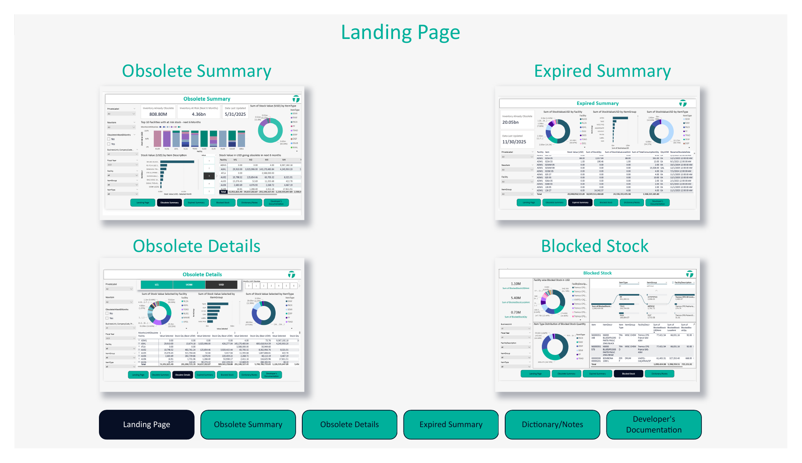
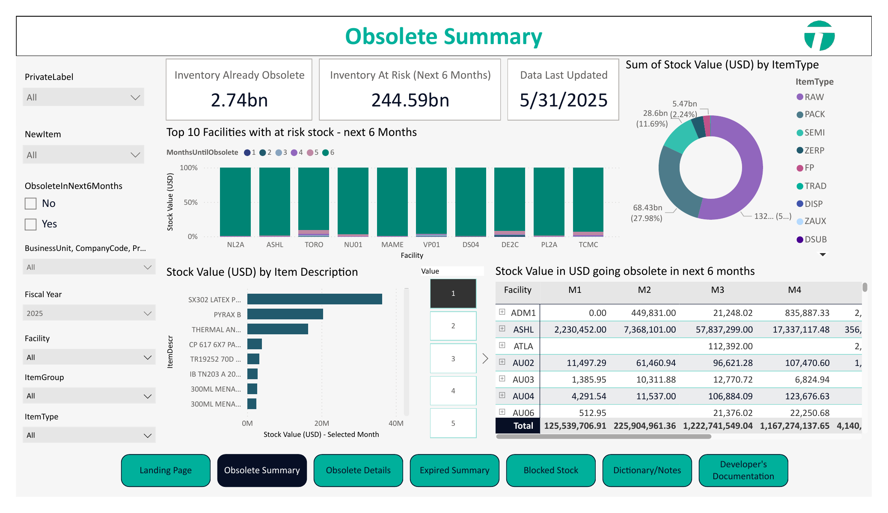

Business Problem
Operations stakeholders needed visibility into obsolete, expired, and at-risk inventory across facilities, item groups, product categories, and inventory aging windows.

Inventory Dashboard Landing Page
Navigation view across obsolete summary, obsolete details, expired summary, blocked stock, and documentation pages.

Obsolete Inventory Summary
Facility-level and item-type view of inventory at risk, helping stakeholders identify stock exposure over upcoming months.
Solution
Built Power BI reporting views that helped users monitor inventory risk, review stock exposure, and prioritize follow-up actions by facility, item type, and product group.
Key Features
- Obsolete inventory tracking
- Inventory at-risk monitoring
- Facility-level stock analysis
- Item type and item group filtering
- Expired inventory reporting
- Blocked stock visibility
- Operational drill-down views
Business Impact
Improved visibility into inventory risk and helped stakeholders identify high-risk stock areas requiring operational and financial review.